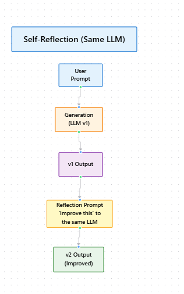
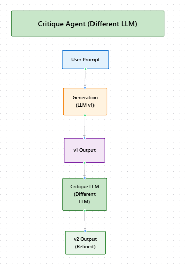

Module 2 — Episode 1
Training:Agentic AI Training
🎯 Learning Objectives
By the end of this episode, you will be able to:
- ✅ Implement the reflection design pattern to iteratively improve LLM outputs
- ✅ Use feedback loops to enhance text and code generation quality
- ✅ Identify when and how to incorporate external information for stronger reflection results
🧭 Overview
This episode introduces the Reflection Design Pattern, a method for improving the quality of large language model (LLM) outputs through iterative self-evaluation.
It draws inspiration from human behavior—reviewing and refining one’s own work—and applies it to LLM workflows.
Reflection is widely used in real-world systems for tasks such as email drafting, code generation, and reasoning improvement.
🧱 Prerequisites
Readers should already understand:
- Basic prompt engineering and LLM prompting workflows
- How to generate and evaluate LLM outputs
- Familiarity with multi-step reasoning or chain-of-thought prompting
🔑 Core Concepts
- Reflection Design Pattern – A structured approach where an LLM reviews and improves its own (or another model’s) output, producing a refined version.
- First Draft (v1) – The initial output generated by the LLM based on a task prompt.
- Reflected Draft (v2) – The improved version produced after prompting the model to analyze and refine the first draft.
- External Feedback – Information from outside the model (e.g., execution results, error logs, human feedback) that enhances the reflection process.
🖼 Visual Explanation
 Caption:This diagram illustrates the reflection loop where an LLM produces an initial output (v1), which is then reviewed and improved to produce a refined version (v2), enabling iterative self-correction.
 Caption:This diagram shows how iterative reflection using another LLM as a critic enables the model to correct and refine its outputs.
⚙️ Technical Breakdown
How It Works
1. Initial Generation:- Prompt the LLM to produce an initial output (e.g., an email draft or code snippet).
- Example: “Write an email to schedule dinner with Tommy next month.”
2. Reflection Step:- Feed the generated output (v1) back into the model with a new prompt:
“Review and improve this email for clarity and completeness.”
- The model produces a refined version (v2).
3. Optional External Feedback:- For code, execute v1 and capture outputs or errors.
- Provide these results to the LLM for deeper reflection:
“Here’s the error log. Fix the issues and improve the code.”
4. Final Output:- The model incorporates the feedback and produces a more accurate, robust, or readable version.
Why It Works
Reflection leverages the LLM’s ability to reason about its own outputs.
By reframing the task as a critique or improvement exercise, the model applies different reasoning pathways—often catching issues missed in direct generation.
Adding external signals (e.g., runtime errors) grounds the reflection in factual feedback, significantly improving reliability.
When To Use It
✅ Ideal Scenarios:- When initial outputs are inconsistent or incomplete
- For tasks requiring precision (e.g., code generation, summarization, reasoning)
- When external feedback (like runtime logs or user reviews) is available
- Latency or token cost is critical (reflection doubles inference steps)
- The task is trivial and doesn’t benefit from iterative review
Trade-offs & Limitations
| Aspect | Consideration |
|---|---|
| Complexity | Introduces multi-step workflows and prompt chaining |
| Performance | May increase inference time and token usage |
| Scalability | Requires orchestration if applied across many tasks |
| Reliability | Without external feedback, reflection gains may be modest |
Performance Considerations
- Bottlenecks: Repeated LLM calls can slow down pipelines.
- Optimization: Cache intermediate outputs and parallelize reflections when possible.
- Compute Cost: Reflection roughly doubles token usage per task.
- Quality Trade-off: Gains in correctness often outweigh added cost for complex tasks.
💻 Code Examples
Minimal Example (Pseudocode)
# Step 1: Generate initial output
prompt_v1 = "Write a Python function to compute factorial of a number."
v1 = llm.generate(prompt_v1)
# Step 2: Reflect and improve
reflection_prompt = f"Review and improve the following code:\n\n{v1}\n\nFix any bugs and make it more readable."
v2 = llm.generate(reflection_prompt)
print("Improved Code:\n", v2)
Example with External Feedback
# Execute v1 and capture feedback
try:
exec(v1)
feedback = "No runtime errors."
except Exception as e:
feedback = f"Error during execution: {e}"
# Reflect with external feedback
reflection_prompt = f"""
The following code produced this feedback:
{feedback}
Please fix any issues and improve the code:
{v1}
"""
v2 = llm.generate(reflection_prompt)
🧩 Key Takeaways
- Reflection transforms LLM outputs from single-pass generation into iterative improvement cycles.
- External feedback—like error logs—greatly enhances reflection effectiveness.
- While not foolproof, reflection often yields measurable quality improvements with minimal implementation effort.
🚀 Next Steps
In the next episode, we’ll compare reflection-based prompting with direct generation (zero-shot prompting) to measure effectiveness and trade-offs across different task types.